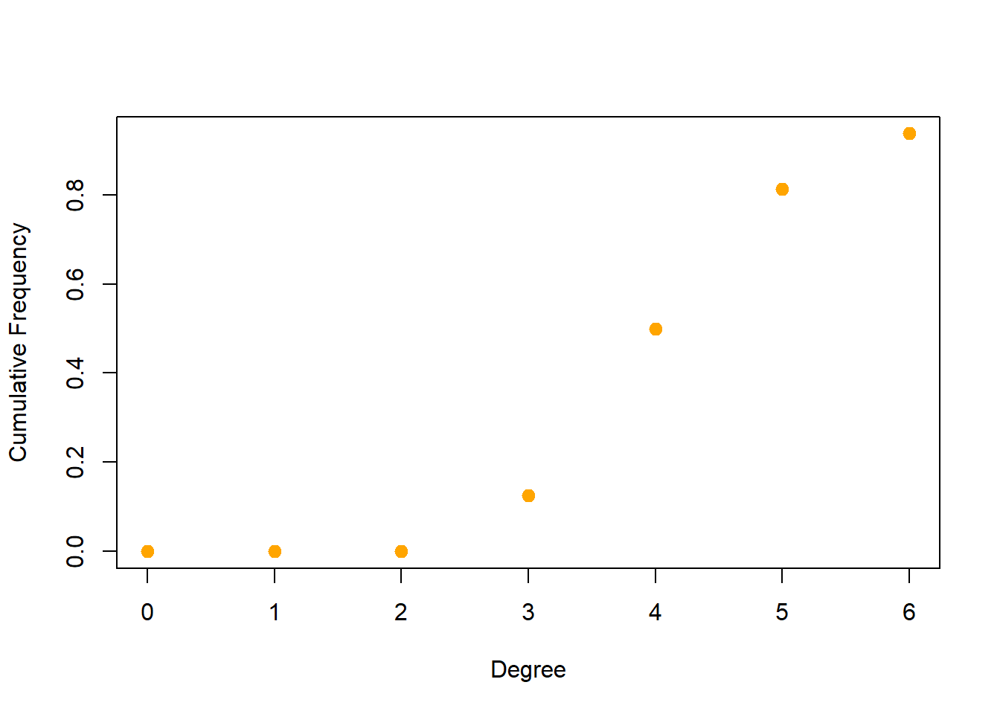

Chapter 1 CTLSC0x - Supply Chain Analytics
1.1 Week2 - Unconstrained & Constrained Optimization
1.1.1 Recitation
1.1.1.1 Unconstrained
Straigthforward exercises in modeling optimization without index vectors.
\[ \textbf{Equation 1:} \ \ Minimze \ \ y = x^2+2*x-3 \]
Since is an unconstrained quadratic optimization with a single variable, base R package optimizer can solve it
f <- function(x){x^2+2*x-3}
result <- optimize(f,interval = c(-10,10), maximum = F)
print(result)## $minimum
## [1] -1
##
## $objective
## [1] -4Let’s check the result in the plot
#Data created for plot, using mutate on the function
x <- seq(-10,10,1)
data <- data <- data.frame(x) %>%
mutate(y = f(x))
#Ploting with a marker on the optimal solution
plot_ly(data, x = ~x, y = ~y, type = 'scatter', mode = 'lines') %>%
add_markers(y = result$objective, x = result$minimum)\[ \textbf{Equation 2:} \ \ Maximize \ \ z =-x^2+2*x-y^2 \]
In this equation there is 2 variables, for this case it can be used the base R package optim.
f <- function(x,y){-x[1]^2+2*x[1]-x[2]^2}
result <- optim(c(1, 1), f)
print(result)## $par
## [1] 4996334736823209367660028284644608202640064886266268428
## [2] 26841715791435261610666442462228268624462880624020808440
##
## $value
## [1] -745441067430571406480480462840082246886080068688280484046020260262848202268640042268242440482008024480008626200
##
## $counts
## function gradient
## 501 NA
##
## $convergence
## [1] 1
##
## $message
## NULL1.1.1.2 Constrained
1.1.2 Practice Problems
1.1.2.1 Handmade Baskets
\[ P = (x/73)^2-(x/95)+0.92 \]
P <- function(x){(x/73)^2-(x/95)+0.92}
#Data created for plot, using mutate on the function
x <- seq(-100,200,1)
data <- data <- data.frame(x) %>%
mutate(y = P(x))
min = data[data$y == min(data$y),] #cheating :P
#Ploting with a marker on the optimal solution
plot_ly(data, x = ~x, y = ~y, type = 'scatter', mode = 'lines') %>%
add_markers(y = min$y, x = min$x)#Part 1: Price Functio
#Question1: How much will it charge with 5 basket's order ?
P(5)## [1] 0.8720597#Question2: What is the first derivative of the price function?
# library(Ryacas)
# x <- Sym("x")
# s <- expression((x/73)^2-(x/95)+0.92)
# deriv(s,x) #Didn't work TO DO
#
# #Question3: Second Derivative
# x <- Sym("x")
# s <- expression(-1/95 + (2*x)/5329)
# deriv(s,x) #worked
#Question4: Lowest Unit Price
result <- optimize(P,interval = c(-100,100), maximum = F)
print(result)## $minimum
## [1] 28.04737
##
## $objective
## [1] 0.77238231.1.2.2 Maximizing Storage
\[ \begin{align*} \textbf{Minimize} & \ Z = x \cdot y \\ \textbf{Subject to} \\ & 2 \cdot x+2 \cdot y = 26.7 \end{align*} \]
\[ \begin{align*} \textbf{Minimize} & \ Z\ =x\cdot\ \left(\frac{\left(26.7-2\cdot x\right)}{2}\right)\\ \end{align*} \]
Solving:
f <- function(x){x*((26.7 - 2*x)/2)}
result <- optimize(f,interval = c(-100,100), maximum = T)
print(result)## $maximum
## [1] 6.675
##
## $objective
## [1] 44.55562Let’s check the result in the plot
#Data created for plot, using mutate on the function
x <- seq(-100,100,0.1)
data <- data <- data.frame(x) %>%
mutate(y = f(x))
#Ploting with a marker on the optimal solution
plot_ly(data, x = ~x, y = ~y, type = 'scatter', mode = 'lines') %>%
add_markers(y = result$objective, x = result$maximum)1.1.2.3 Marketing MagicPuppy
\[ N = 1700 \left ( \frac{x}{90} - \left ( \frac{x}{90} \right ) ^2 \right ) \]
f <- function(x){1700*(x/90-(x/90)^2)}
#Question1: First derivative
# x <- Sym("x")
# s <- expression(1700*(x/90-(x/90)^2))
# deriv(s,x) #Didn't work TO DO
#Question2: How many units should be given away in the campaign in order to maximize its positive impact?
result <- optimize(f,interval = c(-100,200), maximum = T)
print(result)## $maximum
## [1] 45
##
## $objective
## [1] 425x <- seq(-50,100,1)
data <- data <- data.frame(x) %>%
mutate(y = f(x))
#Ploting with a marker on the optimal solution
plot_ly(data, x = ~x, y = ~y, type = 'scatter', mode = 'lines') %>%
add_markers(y = result$objective, x = result$maximum)1.1.2.4 CureBase Cancer Institute
\[ W = \left ( m^{x^{2}} \right )\left ( n^{-x} \right )\left ( z^7 \right ) \]
#Question what is the value of x at the maximum value of W , given that m=0.06 , n=0.14 , z=0.15 ?)
f <- function(x){0.06^(x^2)*(0.14^(-x))*0.15^7}
result <- optimize(f,interval = c(-1,1), maximum = T)
print(result)## $maximum
## [1] 0.3494179
##
## $objective
## [1] 0.000002408895x <- seq(-1,1,0.1)
data <- data <- data.frame(x) %>%
mutate(y = f(x))
#Ploting with a marker on the optimal solution
plot_ly(data, x = ~x, y = ~y, type = 'scatter', mode = 'lines') %>%
add_markers(y = result$objective, x = result$maximum)1.1.2.5 Santa’s Molding Company
data <- tibble(Type = c("Profit","Time","Cubic Area", "index capacity"),
Toy = c(25,13,33,75), doll = c(25,15,25,70),
Capacity = c(NA,1440, 3000, NA))
kable(data, caption = "Santa’s Molding Company")| Type | Toy | doll | Capacity |
|---|---|---|---|
| Profit | 25 | 25 | |
| Time | 13 | 15 | 1440 |
| Cubic Area | 33 | 25 | 3000 |
| index capacity | 75 | 70 |
$$ \[\begin{align*} \textbf{Maximize} & \ y = \sum_{i=1}^{N} p_i\cdot x_i \\ \textbf{subject to}\\ & x_i \le\ c_i \ \ \forall i \in N \\ & \sum_{i=1}^{N} t_{i} \cdot x_i \le\ 1440 \\ & \sum_{i=1}^{N} a_{i} \cdot x_i \le\ 3000 \\ & x_i \ge 0 \\ \\ \textbf{Where} \\ & i = \text{Products in N} \\ & p_i = \text{Profit margin for product i} \\ & c_i = \text{Product daily capacity} \\ & t_i = \text{Time to mold product i} \\ & a_i = \text{Cubic inches of product i} \\ & x_i = \text{Quantity of product i to mold} \\ \end{align*}\] $$
If we look closer on the dataframe, we can set constraints 2 and 3 as one with a matrix including capacity constraints, but for math notation I’ve set them differently since they are 2 different types of entities.
rm(x)
n = 2 #Number of products Toy and doll
c = filter(data, Type == "index capacity") %>% select(Toy,doll) %>% gather() %>% .$value #index_capacity
a = as.matrix(filter(data, Type %in% c("Time","Cubic Area")) %>% select(Toy,doll)) #constraints left hand
C = filter(data, Type %in% c("Time","Cubic Area")) %>% select(Capacity) %>% .$Capacity #constraints right hand
p = filter(data, Type == "Profit") %>% select(Toy,doll) %>% gather() %>% .$value #profit
model <- MIPModel() %>%
# Variable of profit
add_variable(x[i], i = 1:n, type = "integer", lb = 0) %>%
# minimize travel distance
set_objective(sum_expr(p[i]*x[i], i = 1:n), "max") %>%
# you cannot exceed the Plant Capacity
add_constraint(x[i] <= c[i], i= 1:n) %>%
#You cannot exceed aditivie capacity
add_constraint(sum_expr(x[i] * a[j,i], i = 1:n) <= C[j], j = 1:n)
#Solve
result <- solve_model(model, with_ROI(solver = "glpk", verbose = FALSE))
#Optimal Value
result$objective_value## [1] 2575#result solution
result$solution## x[1] x[2]
## 53 50Let’s solve the questions
P <- function(x,y){25*x+25*y}
#Question 1: Graphical selection
#Question 2: What is the value of x = 70 and y= 30
P(70,30)## [1] 2500#Question 3: What is the value of x = 50 and y= 53
P(50,53)## [1] 2575#Question 3: What is the value of x = 50 and y= 53
P(20,75)## [1] 23751.1.2.6 Crazy Cereal
data <- tibble(Type = c("Sugary","Regular","Capacity"), Sugar = c(0.66,0.21,2000),
Corn_Flake = c(0.34,0.79,4000), Profit = c(0.94,0.82,NA))
kable(data, caption = "Crazy Cereal")| Type | Sugar | Corn_Flake | Profit |
|---|---|---|---|
| Sugary | 0.66 | 0.34 | 0.94 |
| Regular | 0.21 | 0.79 | 0.82 |
| Capacity | 2000.00 | 4000.00 |
$$ \[\begin{align*} \textbf{Maximize} & \ y = \sum_{i=1}^{N} p_i \cdot x_{i} \\ \textbf{subject to}\\ & \sum_{i=1}^{N} x_{i} \cdot a_{i,j} \le C_j, \ j \in M \\ & x_{i} \ge 0, \ x \in \mathbb{Z} \\ \\ \textbf{Where} \\ & i = \text{Products in N} \\ & j = \text{Components of N = M} \\ & p_i = \text{Profit margin for product i} \\ & a_{i,j} = \text{components for product i} \\ & C_j = \text{Component capacity} \\ & x_{i} = \text{Quantity of product} \\ \end{align*}\] $$
rm(x)## Warning in rm(x): objeto 'x' não encontradon = 2 #Number of products Sugary and Regular
m = 2 #Number of components Sugar and Corn_Flake
#Let's do some roots R instead of dplyr :)
C = as.matrix(data[data$Type == "Capacity",c("Sugar", "Corn_Flake")])
a = as.matrix(data[data$Type %in% c("Sugary","Regular"),c("Sugar", "Corn_Flake")])
p = as.matrix(data$Profit[1:2])
model <- MIPModel() %>%
# Variable of profit
add_variable(x[i], i = 1:n, type = "integer", lb = 0) %>%
# maximize profit
set_objective(sum_expr(p[i] * x[i], i = 1:n), "max") %>%
#You cannot exceed component capacity
add_constraint(sum_expr(x[i] * a[i,j], i = 1:m) <= C[j], j = 1:n)
#Solve
result <- solve_model(model, with_ROI(solver = "glpk", verbose = FALSE))
#Optimal Value
result$objective_value## [1] 5116.46#result solution
result$solution## x[1] x[2]
## 1644 43551.1.2.7 Jim’s Meat Packing Company
data <- tibble(Cut = c("Chuck","Sirloin","Restriction"), Lean_Meat = c(0.09,0.6,0.3),
Fat_Meat = c(0.02,0.06,0.05), Cost = c(9.3,8.4,NA))
kable(data, caption = "Jim's Meat")| Cut | Lean_Meat | Fat_Meat | Cost |
|---|---|---|---|
| Chuck | 0.09 | 0.02 | 9.3 |
| Sirloin | 0.60 | 0.06 | 8.4 |
| Restriction | 0.30 | 0.05 |
$$ \[\begin{align*} \textbf{Minimize} & \ y = \sum_{i=1}^{N} c_i \cdot x_{i} \\ \textbf{subject to}\\ & \sum_{i=1}^{N} x_{i} \cdot a_{i,j} \ge \sum_{i=1}^{N} R_j \cdot x_{i}, \ \ j \in N=1 \\ & \sum_{i=1}^{N} x_{i} \cdot a_{i,j} \le \sum_{i=1}^{N} R_j \cdot x_{i}, \ \ j \in N=2 \\ & \sum_{i=1}^{N} x_{i} \ge 50 \\ & x_{i} \ge 0, \ x \in \mathbb{Z} \\ \\ \textbf{Where} \\ & i = \text{Type of cut in N} \\ & j = \text{Type of meat} \\ & c_i = \text{Cost for product i} \\ & a_{i,j} = \text{components for product i} \\ & R_j = \text{Restriction capacity} \\ & x_{i} = \text{Quantity of product} \\ \end{align*}\] $$
rm(x)## Warning in rm(x): objeto 'x' não encontradon = 2 #Number of products Sugary and Regular
m = 2 #Number of components Sugar and Corn_Flake
#Another way of subsetting data in R
R = as.matrix(data[3,2:3])
a = as.matrix(data[1:2,2:3])
c = as.matrix(data[1:2,4])
model <- MIPModel() %>%
# Variable of profit
add_variable(x[i], i = 1:n, type = "integer", lb = 0) %>%
# maximize profit
set_objective(sum_expr(c[i] * x[i], i = 1:n), "min") %>%
#yay
add_constraint(sum_expr(x[i], i = 1:n) >= 50) %>%
#You cannot exceed component capacity
add_constraint(sum_expr(x[i] * a[i,j], i = 1:n) >= sum_expr(x[i], i = 1:n)*R[j], j = 1) %>%
add_constraint(sum_expr(x[i] * a[i,j], i = 1:n) <= sum_expr(x[i], i = 1:n)*R[j], j = 2)
#Solve
result <- solve_model(model, with_ROI(solver = "glpk", verbose = F))
#Optimal Value
result$objective_value## [1] 431.7#result solution
result$solution## x[1] x[2]
## 13 37#Duals
get_column_duals(result)## [1] NAI couldn’t find a proper function on shadow price calculation on ompr package, so lets try to calculate it ourselves!
ModelIter <- function(z){
model <- MIPModel() %>%
# Variable of profit
add_variable(x[i], i = 1:n, type = "integer", lb = 0) %>%
# maximize profit
set_objective(sum_expr(c[i] * x[i], i = 1:n), "min") %>%
#yay
add_constraint(sum_expr(x[i], i = 1:n) >= z) %>%
#You cannot exceed component capacity
add_constraint(sum_expr(x[i] * a[i,j], i = 1:n) >= sum_expr(x[i], i = 1:n)*R[j], j = 1) %>%
add_constraint(sum_expr(x[i] * a[i,j], i = 1:n) <= sum_expr(x[i], i = 1:n)*R[j], j = 2) %>%
solve_model(with_ROI(solver = "glpk", verbose = F))
return(model$objective_value)
}
Iter_Results <- tibble(constraint = seq(48,55,1)) %>%
mutate(Obj_value = as.numeric(map(constraint, ModelIter)),
Marginal_value = round((Obj_value-lag(Obj_value,1)/(constraint-lag(constraint,1))),2))
kable(Iter_Results, caption = "Result")| constraint | Obj_value | Marginal_value |
|---|---|---|
| 48 | 414.0 | |
| 49 | 423.3 | 9.3 |
| 50 | 431.7 | 8.4 |
| 51 | 440.1 | 8.4 |
| 52 | 448.5 | 8.4 |
| 53 | 457.8 | 9.3 |
| 54 | 466.2 | 8.4 |
| 55 | 474.6 | 8.4 |
mean(Iter_Results$Marginal_value[2:length(Iter_Results)]) #Didn't work## [1] 8.85Marginal Value set as 8.85 got us an error, the answer was 8.63, would be good to understand what was made wrong in here.
1.1.2.8 John’s Shipping Company
data <- tibble(Fuel_Type = c("O_Type","D_Type","Restriction"), Hydrogen_Conc = c(45,90,60),
Oxygen_Conc = c(15,6,9), Cost = c(1.05,1.34,NA))
kable(data, caption = "John's Shipping Company")| Fuel_Type | Hydrogen_Conc | Oxygen_Conc | Cost |
|---|---|---|---|
| O_Type | 45 | 15 | 1.05 |
| D_Type | 90 | 6 | 1.34 |
| Restriction | 60 | 9 |
$$ \[\begin{align*} \textbf{Minimize} & \ y = \sum_{i=1}^{N} c_i \cdot x_{i} \\ \textbf{subject to}\\ & \sum_{i=1}^{N} x_{i} \cdot a_{i,j} \ge \sum_{i=1}^{N} R_j \cdot x_{i}, \ \ j \in N=1 \\ & \sum_{i=1}^{N} x_{i} \cdot a_{i,j} \le \sum_{i=1}^{N} R_j \cdot x_{i}, \ \ j \in N=2 \\ & \sum_{i=1}^{N} x_{i} \ge G \\ & x_{i} \ge 0, \ x \in \mathbb{Z} \\ \\ \textbf{Where} \\ & i = \text{Type of cut in N} \\ & j = \text{Type of meat} \\ & c_i = \text{Cost for product i} \\ & a_{i,j} = \text{components for product i} \\ & R_j = \text{Restriction capacity} \\ & x_{i} = \text{Quantity of product} \\ & G = \text{Minimum to be produced} \\ \end{align*}\] $$
rm(x)## Warning in rm(x): objeto 'x' não encontradon = 2 #Number of products Sugary and Regular
m = 2 #Number of components Sugar and Corn_Flake
z = 10000 #minimum to be produced
#Another way of subsetting data in R
R = as.matrix(data[3,2:3])
a = as.matrix(data[1:2,2:3])
c = as.matrix(data[1:2,4])
model <- MIPModel() %>%
# Variable of profit
add_variable(x[i], i = 1:n, type = "integer", lb = 0) %>%
# maximize profit
set_objective(sum_expr(c[i] * x[i], i = 1:n), "min") %>%
#Produce at least the minimum required
add_constraint(sum_expr(x[i], i = 1:n) >= z) %>%
#Minimum component required
add_constraint(sum_expr(x[i] * a[i,j], i = 1:n) >= sum_expr(x[i], i = 1:n)*R[j], j = 1) %>%
#You cannot exceed component capacity
add_constraint(sum_expr(x[i] * a[i,j], i = 1:n) <= sum_expr(x[i], i = 1:n)*R[j], j = 2)
#Solve
result <- solve_model(model, with_ROI(solver = "glpk", verbose = F))
#Optimal Value
result$objective_value## [1] 12433.43#result solution
result$solution## x[1] x[2]
## 3333 66671.1.2.9 A New Office Plant
data <- tibble(Type = c("Product_1","Product_2","Product_3", "Min", "Max"),
Nitrogen = c(360,380,310,1800,2200), Potassium = c(30,20,20,100,100),
cost = c(1.59,2.19,2.99,NA,NA))
kable(data, caption = "A New Office Plant")| Type | Nitrogen | Potassium | cost |
|---|---|---|---|
| Product_1 | 360 | 30 | 1.59 |
| Product_2 | 380 | 20 | 2.19 |
| Product_3 | 310 | 20 | 2.99 |
| Min | 1800 | 100 | |
| Max | 2200 | 100 |
$$ \[\begin{align*} \textbf{Minimize} & \ y = \sum_{i=1}^{N} c_i \cdot x_{i} \\ \textbf{subject to}\\ & \sum_{i=1}^{N} x_{i} \cdot a_{i,j} \ge Min_j, \ \ j \in M \\ & \sum_{i=1}^{N} x_{i} \cdot a_{i,j} \le Max_j, \ \ j \in M \\ & x_{i} \ge 0 \\ \textbf{Where} \\ & i = \text{Type of product in N} \\ & j = \text{Type of component in M} \\ & c_i = \text{Cost for product i} \\ & a_{i,j} = \text{components for product i} \\ & Min_j = \text{Restriction of component} \\ & Max_j = \text{Restriction of component} \\ & x_{i} = \text{Quantity of product} \\ \end{align*}\] $$
rm(x)## Warning in rm(x): objeto 'x' não encontradon = 3 #Number of products
m = 2 #Number of components
#subsetting data to R
min = as.matrix(data[4,2:3])
max = as.matrix(data[5,2:3])
a = as.matrix(data[1:3,2:3])
c = as.matrix(data[1:3,4])
model <- MIPModel() %>%
# Variable of profit
add_variable(x[i], i = 1:n, type = "continuous", lb = 0) %>%
# maximize profit
set_objective(sum_expr(c[i] * x[i], i = 1:n), "min") %>%
#Produce at least the minimum required
add_constraint(sum_expr(x[i]*a[i,j], i = 1:n) >= min[j], j = 1:m) %>%
#Dont exceed maximum required
add_constraint(sum_expr(x[i]*a[i,j], i = 1:n) <= max[j], j = 1:m)
#Solve
result <- solve_model(model, with_ROI(solver = "glpk", verbose = F))
#Optimal Value
result$objective_value## [1] 10.14286#result solution
result$solution## x[1] x[2] x[3]
## 0.4761905 4.2857143 0.0000000#Question: How many mg of Nitrogen would your solution provide to the plant every day? (Please round your answer to integer number)
result$solution[1]*a[1,1]+result$solution[2]*a[2,1]## x[1]
## 18001.1.2.10 Rochak’s Ink Company
data <- tibble(Type = c("P_Cyan","P_Magenta","P_Yellow","Max"),
Stage1 = c(0.44,0.51,0.5,17*60^2), Stage2 = c(0.55,0.6,0.59,23*60^2),
Demand = c(84000,72000,93000,NA), Profit = c(0.6,0.72,0.62,NA))
kable(data, caption = "Rochak's Ink Company")| Type | Stage1 | Stage2 | Demand | Profit |
|---|---|---|---|---|
| P_Cyan | 0.44 | 0.55 | 84000 | 0.60 |
| P_Magenta | 0.51 | 0.60 | 72000 | 0.72 |
| P_Yellow | 0.50 | 0.59 | 93000 | 0.62 |
| Max | 61200.00 | 82800.00 |
$$ \[\begin{align*} \textbf{Maximize} & \ y = \sum_{i=1}^{N} p_i \cdot x_{i} \\ \textbf{subject to}\\ & \sum_{i=1}^{N} x_{i} \cdot a_{i,j} \le Max_j, \ \ j \in M \\ & \sum_{i=1}^{N} x_{i} \le D_i \\ & x_{i} \ge 0, \ x \in \mathbb{Z} \\ \textbf{Where} \\ & i = \text{Type of product in N} \\ & j = \text{Production stage in M} \\ & p_i = \text{Profit for product i} \\ & a_{i,j} = \text{Time requirement for product i in stage j} \\ & Max_j = \text{Restriction of production time} \\ & D_i = \text{Demand for product} \\ & x_{i} = \text{Quantity of product} \\ \end{align*}\] $$
In this exercise, you’re willing to maximize profit given the demand. You don’t have to fulfill all of the demand, that’s why the $ {i=1}^{N} x{i} D_i$ constraint.
rm(x)## Warning in rm(x): objeto 'x' não encontradon = 3 #Number of products
m = 2 #Number of components
#subsetting data to R
D = as.matrix(data[1:3,4])
max = as.matrix(data[4,2:3])
a = as.matrix(data[1:3,2:3])
p = as.matrix(data[1:3,5])
model <- MIPModel() %>%
# Variable of profit
add_variable(x[i], i = 1:n, type = "integer", lb = 0) %>%
# maximize profit
set_objective(sum_expr(p[i] * x[i], i = 1:n), "max") %>%
#Don't produce something you don't have demand for
add_constraint(x[i] <= D[i], i = 1:n) %>%
#Dont exceed maximum required
add_constraint(sum_expr(x[i]*a[i,j], i = 1:n) <= max[j], j = 1:m)
#Solve
result <- solve_model(model, with_ROI(solver = "glpk", verbose = F))
#Optimal Value
result$objective_value## [1] 85221.72#result solution
result$solution## x[1] x[2] x[3]
## 55641 71996 01.1.2.11 Pasteur Cheese Factory
data <- tibble(Type = c("P_Original","P_Cheddar","P_Wasabi","Max","Cost"),
X_Ray = c(8.6,2.2,5.1,8*60,0.11), Checkweigher = c(7.0,6.8,9.8,9*60,0.22),
Profit = c(20,15,17,NA,NA))
kable(data, caption = "Pasteur Cheese Factory")| Type | X_Ray | Checkweigher | Profit |
|---|---|---|---|
| P_Original | 8.60 | 7.00 | 20 |
| P_Cheddar | 2.20 | 6.80 | 15 |
| P_Wasabi | 5.10 | 9.80 | 17 |
| Max | 480.00 | 540.00 | |
| Cost | 0.11 | 0.22 |
$$ \[\begin{align*} \textbf{Maximize} & \ y = \sum_{i=1}^{N} x_{i} \cdot \left( p_i - \sum_{j=1}^{M} c_{i,j} \right) \\ \textbf{subject to}\\ & \sum_{i=1}^{N} x_{i} \cdot a_{i,j} \le Max_j, \ \ j \in M \\ & x_{i} \ge 0, \ x \in \mathbb{Z} \\ \textbf{Where} \\ & i = \text{Type of product in N} \\ & j = \text{Production stage in M} \\ & p_i = \text{Profit for product i} \\ & c_{i,j} = \text{Cost for product i in stage j} \\ & a_{i,j} = \text{Time requirement for product i in stage j} \\ & Max_j = \text{Restriction of production time} \\ & D_i = \text{Demand for product} \\ & x_{i} = \text{Quantity of product} \\ \end{align*}\] $$
In this exercise, you’re willing to maximize profit given the cost of production.
rm(x)## Warning in rm(x): objeto 'x' não encontradon = 3 #Number of products
m = 2 #Number of components
#subsetting data to R
c = as.vector(data[5,2:3]) #This cost will be changed
max = as.matrix(data[4,2:3])
a = as.matrix(data[1:3,2:3])
p = as.matrix(data[1:3,4])
#Multiply all rows of j column of a[i,j] to c[i], in r for this to happen you have to change the vector to a square matrix
kable(diag(c), caption = "As is")| 0.11 | 0.00 |
| 0.00 | 0.22 |
c = a %*% diag(c)
#It becomes:
kable(c, caption = "It becomes")| 0.946 | 1.540 |
| 0.242 | 1.496 |
| 0.561 | 2.156 |
#Get back to model
model <- MIPModel() %>%
# Variable of productW
add_variable(x[i], i = 1:n, type = "integer", lb = 0) %>%
# maximize profit
set_objective(sum_expr(x[i]*(p[i] - sum_expr(c[i,j],j = 1:m)), i = 1:n), "max") %>%
#Dont exceed maximum required
add_constraint(sum_expr(x[i]*a[i,j], i = 1:n) <= max[j], j = 1:m)
#Solve
result <- solve_model(model, with_ROI(solver = "glpk", verbose = F))
#Optimal Value
result$objective_value## [1] 1238.532#result solution
result$solution## x[1] x[2] x[3]
## 48 30 01.2 Week3 - IPs, MILPs & Network Design
1.2.1 Lesson 1 - IPs & MILPs
1.2.1.2 GOnuts
data <- tibble(Type = c("C_Ethiopia","C_Tanzania","C_Nigeria","Demand"),
Ginko = c(21,22.5,23,550), Kola = c(22.5,24.5,25.5,450),
Capacity = c(425,400,750,NA))
kable(data, caption = "GOnuts")| Type | Ginko | Kola | Capacity |
|---|---|---|---|
| C_Ethiopia | 21.0 | 22.5 | 425 |
| C_Tanzania | 22.5 | 24.5 | 400 |
| C_Nigeria | 23.0 | 25.5 | 750 |
| Demand | 550.0 | 450.0 |
$$ \[\begin{align*} \textbf{Minimize} & \ y = \sum_{i=1}^{N} \sum_{j=1}^{M} c_{i,j} \cdot x_{i,j} \\ \textbf{subject to}\\ & \sum_{i=1}^{N} x_{i} \le C_j, \ \ j \in M \\ & \sum_{i=1}^{N} x_{i} \cdot a_{i,j} \ge D_i, \ \ j \in M \\ & x_{i} \ge 0, \ x \in \mathbb{Z} \\ \textbf{Where} \\ & i = \text{Type of product in N} \\ & j = \text{Product component in M} \\ & p_i = \text{Profit for product i} \\ & a_{i,j} = \text{Product requirement for stage j} \\ & P_i = \text{Capacity for Plant} \\ & x_{i} = \text{Quantity of product} \\ \end{align*}\] $$
rm(x)## Warning in rm(x): objeto 'x' não encontradon = 3 #Number of products
m = 2 #Number of components
#subsetting data to R
D = as.matrix(data[4,2:3])
a = as.matrix(data[1:3,2:3])
C = as.matrix(data[1:3,4])
#Modeling for Lesson and question, z is for the exercise, by changing the capacity of plant's constraint
Model <- function(z = NA){
if (is.na(z)) {
z = C
} else {
z = as.matrix(replicate(n = n, z))
}
#Get back to model
model <- MIPModel() %>%
# Variable of productW
add_variable(x[i,j], i = 1:n, j = 1:m, type = "integer", lb = 0) %>%
# maximize profit
set_objective(sum_expr(x[i,j]*a[i,j] ,j = 1:m, i = 1:n), "min") %>%
#Attend all demand
add_constraint(sum_expr(x[i,j], i = 1:n) >= D[j], j = 1:m) %>%
#Attend all demand
add_constraint(sum_expr(x[i,j], j = 1:m) <= z[i], i = 1:n)
#Solve
result <- solve_model(model, with_ROI(solver = "glpk", verbose = FALSE))
return(list(Obj_value = result$objective_value,
Solution = result$solution))
}
#Question 1: Using the capacity of the lesson
Model()## $Obj_value
## [1] 22637.5
##
## $Solution
## x[1,1] x[2,1] x[3,1] x[1,2] x[2,2] x[3,2]
## 0 375 175 425 25 0#Question 2: All plants capacity are 350
Model(350)## $Obj_value
## [1] 22850
##
## $Solution
## x[1,1] x[2,1] x[3,1] x[1,2] x[2,2] x[3,2]
## 0 250 300 350 100 01.2.1.3 QQ4 - Two Simple ILPs
1.2.1.3.1 Part l
data <- tibble(Type = c("Maximize", "C_1","C_2"),
Var_1 = c(3,5,5), Var_2 = c(4,-3,10), RH = c(NA,8,63))
kable(data)| Type | Var_1 | Var_2 | RH |
|---|---|---|---|
| Maximize | 3 | 4 | |
| C_1 | 5 | -3 | 8 |
| C_2 | 5 | 10 | 63 |
rm(x)## Warning in rm(x): objeto 'x' não encontradon = 2 #Number of Variables & constraints
#subsetting data to R
a <- as.matrix(data[1,2:3])
c <- as.matrix(data[2:3,2:3])
RH <- as.matrix(data[2:3,4])
#Get back to model
model <- MIPModel() %>%
# Variable of production
add_variable(x[i], i = 1:n, type = "integer", lb = 0) %>%
# maximize profit
set_objective(sum_expr(x[i]*a[i], i = 1:n), "max") %>%
#Attend all demand
add_constraint(sum_expr(x[i]*c[i,j], j = 1:n) <= RH[i], i = 1:n)
#Solve
result <- solve_model(model, with_ROI(solver = "glpk"))
#Optimal Value
result$objective_value## [1] 28#result solution
result$solution## x[1] x[2]
## 4 41.2.1.3.2 Part 2
data <- tibble(Type = c("Maximize", "C_1","C_2","C_3"),
Var_1 = c(2,-2,2,-2), Var_2 = c(3,1,0,2),
State = c(NA,"<=","<=",">="), RH = c(NA,4,4,-2))
kable(data)| Type | Var_1 | Var_2 | State | RH |
|---|---|---|---|---|
| Maximize | 2 | 3 | ||
| C_1 | -2 | 1 | <= | 4 |
| C_2 | 2 | 0 | <= | 4 |
| C_3 | -2 | 2 | >= | -2 |
rm(x)
n = 2 #Number of Variables & constraints
#subsetting data to R
a <- as.matrix(data[1,2:3])
c <- as.matrix(data[2:4,2:3])
RH <- as.matrix(data[2:4,5])
#Get back to model
model <- MIPModel() %>%
# Variable of production
add_variable(x[i], i = 1:n, type = "integer", lb = 0) %>%
# maximize profit
set_objective(sum_expr(x[i]*a[i], i = 1:n), "max") %>%
#Attend all demand
add_constraint(sum_expr(x[i]*c[j,i], i = 1:n) <= RH[j], j = 1:n) %>%
#Attend all demand
add_constraint(sum_expr(x[i]*c[j,i], i = 1:n) >= RH[j], j = 3)
#Solve
result <- solve_model(model, with_ROI(solver = "glpk"))
#Optimal Value
result$objective_value## [1] 28#result solution
result$solution## x[1] x[2]
## 2 81.2.1.4 GOnuts ll
data <- tibble(Type = c("C_Ethiopia","C_Tanzania","C_Nigeria","Demand"),
Ginko = c(21,22.5,23,550), Kola = c(22.5,24.5,25.5,450),
Capacity = c(425,400,750,NA), Plant_Cost = c(1500,2000,3000,NA))
kable(data, caption = "GOnuts ll")| Type | Ginko | Kola | Capacity | Plant_Cost |
|---|---|---|---|---|
| C_Ethiopia | 21.0 | 22.5 | 425 | 1500 |
| C_Tanzania | 22.5 | 24.5 | 400 | 2000 |
| C_Nigeria | 23.0 | 25.5 | 750 | 3000 |
| Demand | 550.0 | 450.0 |
$$ \[\begin{align*} \textbf{Minimize} & \ z = \sum_{i=1}^{N} \sum_{j=1}^{M} c_{i,j} \cdot x_{i,j} + \sum_{j=1}^{M} f_j \cdot y_j \\ \textbf{subject to} \\ & \sum_{i=1}^{N} x_{i} \le C_j, \ \ j \in M \\ & \sum_{i=1}^{N} x_{i} \cdot a_{i,j} \ge D_i, \ \ j \in M \\ & \sum_{i=1}^{N} x_{i,j} - f_j \cdot B_M \le 0\\ & x_{i} \ge 0, \ x \in \mathbb{Z} \\ \textbf{Where} \\ & i = \text{Type of Plant in N} \\ & j = \text{Demand in M} \\ & p_i = \text{Profit for product i} \\ & a_{i,j} = \text{Product requirement for stage j} \\ & P_j = \text{Capacity for Plant} \\ & B_M = \text{Big number}\\ & Max_j = \text{Capacity for components} \\ & x_{i} = \text{Quantity of product} \\ \end{align*}\] $$
rm(x)## Warning in rm(x): objeto 'x' não encontradon = 3 #Number of products
m = 2 #Number of components
#subsetting data to R
D = as.matrix(data[4,2:3])
a = as.matrix(data[1:3,2:3])
C = as.matrix(data[1:3,4])
Pc = as.matrix(data[1:3,5])
B = sum(D)
Model <- function(z = NA){
if (is.na(z)) {
z = C
} else {
z = as.matrix(replicate(n = n, z))
}
#Get back to model
model <- MIPModel() %>%
# Variable of production
add_variable(x[i,j], i = 1:n, j = 1:m, type = "integer", lb = 0) %>%
#Binary Variable
add_variable(f[i], i = 1:n, type = "binary") %>%
# maximize profit
set_objective(sum_expr(x[i,j]*a[i,j] ,j = 1:m, i = 1:n) +
sum_expr(f[i]*Pc[i], i = 1:n), "min") %>%
#Attend all demand
add_constraint(sum_expr(x[i,j], i = 1:n) >= D[j], j = 1:m) %>%
#Attend all demand
add_constraint(sum_expr(x[i,j], j = 1:m) <= z[i], i = 1:n) %>%
#
add_constraint(sum_expr(x[i,j], j = 1:m) - f[i]* B <= 0, i = 1:n)
#Solve
result <- solve_model(model, with_ROI(solver = "glpk", verbose = FALSE))
return(list(Obj_value = result$objective_value,
Solution = result$solution))
}
#Question 1: Using the capacity of the lesson
Model()## Warning: There are variables in your environment that interfere with your
## defined model variables: f. This can lead to unexpected behaviour.## Warning: There are variables in your environment that interfere with your
## defined model variables: f. This can lead to unexpected behaviour.
## Warning: There are variables in your environment that interfere with your
## defined model variables: f. This can lead to unexpected behaviour.
## Warning: There are variables in your environment that interfere with your
## defined model variables: f. This can lead to unexpected behaviour.
## Warning: There are variables in your environment that interfere with your
## defined model variables: f. This can lead to unexpected behaviour.
## Warning: There are variables in your environment that interfere with your
## defined model variables: f. This can lead to unexpected behaviour.
## Warning: There are variables in your environment that interfere with your
## defined model variables: f. This can lead to unexpected behaviour.
## Warning: There are variables in your environment that interfere with your
## defined model variables: f. This can lead to unexpected behaviour.
## Warning: There are variables in your environment that interfere with your
## defined model variables: f. This can lead to unexpected behaviour.
## Warning: There are variables in your environment that interfere with your
## defined model variables: f. This can lead to unexpected behaviour.
## Warning: There are variables in your environment that interfere with your
## defined model variables: f. This can lead to unexpected behaviour.
## Warning: There are variables in your environment that interfere with your
## defined model variables: f. This can lead to unexpected behaviour.
## Warning: There are variables in your environment that interfere with your
## defined model variables: f. This can lead to unexpected behaviour.
## Warning: There are variables in your environment that interfere with your
## defined model variables: f. This can lead to unexpected behaviour.
## Warning: There are variables in your environment that interfere with your
## defined model variables: f. This can lead to unexpected behaviour.
## Warning: There are variables in your environment that interfere with your
## defined model variables: f. This can lead to unexpected behaviour.
## Warning: There are variables in your environment that interfere with your
## defined model variables: f. This can lead to unexpected behaviour.## $Obj_value
## [1] 27350
##
## $Solution
## f[1] f[2] f[3] x[1,1] x[2,1] x[3,1] x[1,2] x[2,2] x[3,2]
## 1 0 1 0 0 550 425 0 25#Question 2: All plants capacity are 450
Model(450)## Warning: There are variables in your environment that interfere with your
## defined model variables: f. This can lead to unexpected behaviour.
## Warning: There are variables in your environment that interfere with your
## defined model variables: f. This can lead to unexpected behaviour.
## Warning: There are variables in your environment that interfere with your
## defined model variables: f. This can lead to unexpected behaviour.
## Warning: There are variables in your environment that interfere with your
## defined model variables: f. This can lead to unexpected behaviour.
## Warning: There are variables in your environment that interfere with your
## defined model variables: f. This can lead to unexpected behaviour.
## Warning: There are variables in your environment that interfere with your
## defined model variables: f. This can lead to unexpected behaviour.
## Warning: There are variables in your environment that interfere with your
## defined model variables: f. This can lead to unexpected behaviour.
## Warning: There are variables in your environment that interfere with your
## defined model variables: f. This can lead to unexpected behaviour.
## Warning: There are variables in your environment that interfere with your
## defined model variables: f. This can lead to unexpected behaviour.
## Warning: There are variables in your environment that interfere with your
## defined model variables: f. This can lead to unexpected behaviour.
## Warning: There are variables in your environment that interfere with your
## defined model variables: f. This can lead to unexpected behaviour.
## Warning: There are variables in your environment that interfere with your
## defined model variables: f. This can lead to unexpected behaviour.
## Warning: There are variables in your environment that interfere with your
## defined model variables: f. This can lead to unexpected behaviour.
## Warning: There are variables in your environment that interfere with your
## defined model variables: f. This can lead to unexpected behaviour.
## Warning: There are variables in your environment that interfere with your
## defined model variables: f. This can lead to unexpected behaviour.
## Warning: There are variables in your environment that interfere with your
## defined model variables: f. This can lead to unexpected behaviour.
## Warning: There are variables in your environment that interfere with your
## defined model variables: f. This can lead to unexpected behaviour.## $Obj_value
## [1] 29050
##
## $Solution
## f[1] f[2] f[3] x[1,1] x[2,1] x[3,1] x[1,2] x[2,2] x[3,2]
## 1 1 1 0 450 100 450 0 01.2.1.5 GOnuts lll
data <- tibble(Type = c("C_Ethiopia","C_Tanzania","C_Nigeria","Demand"),
Plant_Cost = c(1500,2000,3000,NA),
Ginko = c(21,22.5,23,550), Kola = c(22.5,24.5,25.5,450),
Min_Cap = c(100,250,600,NA), Max_Cap = c(425,400,750,NA))
kable(data, caption = "GOnuts lll")| Type | Plant_Cost | Ginko | Kola | Min_Cap | Max_Cap |
|---|---|---|---|---|---|
| C_Ethiopia | 1500 | 21.0 | 22.5 | 100 | 425 |
| C_Tanzania | 2000 | 22.5 | 24.5 | 250 | 400 |
| C_Nigeria | 3000 | 23.0 | 25.5 | 600 | 750 |
| Demand | 550.0 | 450.0 |
$$ \[\begin{align*} \textbf{Minimize} & \ z = \sum_{i=1}^{N} \sum_{j=1}^{M} c_{i,j} \cdot x_{i,j} + \sum_{j=1}^{M} f_j \cdot y_j \\ \textbf{subject to} \\ & \sum_{i=1}^{N} x_{i,j} \le C_j, \ \ j \in M \\ & \sum_{i=1}^{N} x_{i,j} \ge L_j, \ \ j \in M \\ & \sum_{i=1}^{N} x_{i,j} \cdot a_{i,j} \ge D_i, \ \ j \in M \\ & \sum_{i=1}^{N} x_{i,j} - f_j \cdot B_M \le 0\\ & x_{i} \ge 0, \ x \in \mathbb{Z} \\ \textbf{Where} \\ & i = \text{Type of Plant in N} \\ & j = \text{Demand in M} \\ & p_i = \text{Profit for product i} \\ & a_{i,j} = \text{Product requirement for stage j} \\ & P_j = \text{Capacity for Plant} \\ & B_M = \text{Big number}\\ & Max_j = \text{Capacity for components} \\ & x_{i} = \text{Quantity of product} \\ \end{align*}\] $$
rm(x)
n = 3 #Number of products
m = 2 #Number of components
#subsetting data to R
D = as.matrix(data[4,3:4])
a = as.matrix(data[1:3,3:4])
L = as.matrix(data[1:3,5])
C = as.matrix(data[1:3,6])
Pc = as.matrix(data[1:3,2])
B = sum(D)
#Get back to model
model <- MIPModel() %>%
# Variable of production
add_variable(x[i,j], i = 1:n, j = 1:m, type = "integer", lb = 0) %>%
#Binary Variable
add_variable(f[i], i = 1:n, type = "binary") %>%
# maximize profit
set_objective(sum_expr(x[i,j]*a[i,j] ,j = 1:m, i = 1:n) +
sum_expr(f[i]*Pc[i], i = 1:n), "min") %>%
#Attend all demand
add_constraint(sum_expr(x[i,j], i = 1:n) >= D[j], j = 1:m) %>%
#Attend all demand
add_constraint(sum_expr(x[i,j], j = 1:m) <= C[i], i = 1:n) %>%
#
add_constraint(sum_expr(x[i,j], j = 1:m) >= L[i]*f[i], i = 1:n) %>%
#
add_constraint(sum_expr(x[i,j], j = 1:m) - f[i]* B <= 0, i = 1:n)
#Solve
result <- solve_model(model, with_ROI(solver = "glpk"))
#Optimal Value
result$objective_value## [1] 27425#result solution
result$solution## f[1] f[2] f[3] x[1,1] x[2,1] x[3,1] x[1,2] x[2,2] x[3,2]
## 1 0 1 0 0 550 400 0 501.2.1.6 GOnuts lV
Operate with 2 Plants at maximum constraint.
$$ \[\begin{align*} \textbf{Minimize} & \ z = \sum_{i=1}^{N} \sum_{j=1}^{M} c_{i,j} \cdot x_{i,j} + \sum_{j=1}^{M} f_j \cdot y_j \\ \textbf{subject to} \\ & \sum_{i=1}^{N} x_{i,j} \le C_j, \ \ j \in M \\ & \sum_{i=1}^{N} x_{i,j} \ge L_j, \ \ j \in M \\ & \sum_{i=1}^{N} x_{i,j} \cdot a_{i,j} \ge D_i, \ \ j \in M \\ & \sum_{i=1}^{N} x_{i,j} - f_j \cdot B_M \le 0\\ & \sum_{j=1}^{M} f_j \le K \\ & x_{i} \ge 0, \ x \in \mathbb{Z} \\ \textbf{Where} \\ & i = \text{Type of Plant in N} \\ & j = \text{Demand in M} \\ & p_i = \text{Profit for product i} \\ & a_{i,j} = \text{Product requirement for stage j} \\ & P_j = \text{Capacity for Plant} \\ & B_M = \text{Big number}\\ & Max_j = \text{Capacity for components} \\ & x_{i} = \text{Quantity of product} \\ & K = \text{Maximum of Plants to be open} \\ \end{align*}\] $$
rm(x)## Warning in rm(x): objeto 'x' não encontradon = 3 #Number of products
m = 2 #Number of components
K = 2
#subsetting data to R
D = as.matrix(data[4,3:4])
a = as.matrix(data[1:3,3:4])
L = as.matrix(data[1:3,5])
C = as.matrix(data[1:3,6])
Pc = as.matrix(data[1:3,2])
B = sum(D)
#Get back to model
model <- MIPModel() %>%
# Variable of production
add_variable(x[i,j], i = 1:n, j = 1:m, type = "integer", lb = 0) %>%
#Binary Variable
add_variable(f[i], i = 1:n, type = "binary") %>%
# maximize profit
set_objective(sum_expr(x[i,j]*a[i,j] ,j = 1:m, i = 1:n) +
sum_expr(f[i]*Pc[i], i = 1:n), "min") %>%
#Attend all demand
add_constraint(sum_expr(x[i,j], i = 1:n) >= D[j], j = 1:m) %>%
#Attend all demand
add_constraint(sum_expr(x[i,j], j = 1:m) <= C[i], i = 1:n) %>%
#TODO
add_constraint(sum_expr(f[j], j = 1:m) <= K) %>%
#TODO
add_constraint(sum_expr(x[i,j], j = 1:m) >= L[i]*f[i], i = 1:n) %>%
#TODO
add_constraint(sum_expr(x[i,j], j = 1:m) - f[i]* B <= 0, i = 1:n)## Warning: There are variables in your environment that interfere with your
## defined model variables: f. This can lead to unexpected behaviour.## Warning: There are variables in your environment that interfere with your
## defined model variables: f. This can lead to unexpected behaviour.
## Warning: There are variables in your environment that interfere with your
## defined model variables: f. This can lead to unexpected behaviour.
## Warning: There are variables in your environment that interfere with your
## defined model variables: f. This can lead to unexpected behaviour.
## Warning: There are variables in your environment that interfere with your
## defined model variables: f. This can lead to unexpected behaviour.
## Warning: There are variables in your environment that interfere with your
## defined model variables: f. This can lead to unexpected behaviour.
## Warning: There are variables in your environment that interfere with your
## defined model variables: f. This can lead to unexpected behaviour.
## Warning: There are variables in your environment that interfere with your
## defined model variables: f. This can lead to unexpected behaviour.
## Warning: There are variables in your environment that interfere with your
## defined model variables: f. This can lead to unexpected behaviour.
## Warning: There are variables in your environment that interfere with your
## defined model variables: f. This can lead to unexpected behaviour.
## Warning: There are variables in your environment that interfere with your
## defined model variables: f. This can lead to unexpected behaviour.
## Warning: There are variables in your environment that interfere with your
## defined model variables: f. This can lead to unexpected behaviour.
## Warning: There are variables in your environment that interfere with your
## defined model variables: f. This can lead to unexpected behaviour.
## Warning: There are variables in your environment that interfere with your
## defined model variables: f. This can lead to unexpected behaviour.
## Warning: There are variables in your environment that interfere with your
## defined model variables: f. This can lead to unexpected behaviour.
## Warning: There are variables in your environment that interfere with your
## defined model variables: f. This can lead to unexpected behaviour.
## Warning: There are variables in your environment that interfere with your
## defined model variables: f. This can lead to unexpected behaviour.
## Warning: There are variables in your environment that interfere with your
## defined model variables: f. This can lead to unexpected behaviour.
## Warning: There are variables in your environment that interfere with your
## defined model variables: f. This can lead to unexpected behaviour.
## Warning: There are variables in your environment that interfere with your
## defined model variables: f. This can lead to unexpected behaviour.
## Warning: There are variables in your environment that interfere with your
## defined model variables: f. This can lead to unexpected behaviour.
## Warning: There are variables in your environment that interfere with your
## defined model variables: f. This can lead to unexpected behaviour.
## Warning: There are variables in your environment that interfere with your
## defined model variables: f. This can lead to unexpected behaviour.
## Warning: There are variables in your environment that interfere with your
## defined model variables: f. This can lead to unexpected behaviour.
## Warning: There are variables in your environment that interfere with your
## defined model variables: f. This can lead to unexpected behaviour.#Solve
result <- solve_model(model, with_ROI(solver = "glpk"))
#Optimal Value
result$objective_value## [1] 27425#result solution
result$solution## f[1] f[2] f[3] x[1,1] x[2,1] x[3,1] x[1,2] x[2,2] x[3,2]
## 1 0 1 0 0 550 400 0 501.2.2 Recitations
1.2.2.1 Integer Linear Programming
data <- tibble(Type = c("Maximize", "C_1","C_2","C_3"),
Var_1 = c(8,1,3,1), Var_2 = c(20,1,2,3), RH = c(NA,11,30,28))
kable(data)| Type | Var_1 | Var_2 | RH |
|---|---|---|---|
| Maximize | 8 | 20 | |
| C_1 | 1 | 1 | 11 |
| C_2 | 3 | 2 | 30 |
| C_3 | 1 | 3 | 28 |
rm(x)
n = 2 #Number of Variables
m = 3 #Number of constraints
#subsetting data to R
a <- as.matrix(data[1,2:3])
c <- as.matrix(data[2:4,2:3])
RH <- as.matrix(data[2:4,4])
#Get back to model
model <- MIPModel() %>%
# Variable of production
add_variable(x[i], i = 1:n, type = "integer", lb = 0) %>%
# maximize profit
set_objective(sum_expr(x[i]*a[i], i = 1:n), "max") %>%
#Attend all demand
add_constraint(sum_expr(x[i]*c[j,i], i = 1:n) <= RH[j], j = 1:m)
#Solve
result <- solve_model(model, with_ROI(solver = "glpk"))
#Optimal Value
result$objective_value## [1] 188#result solution
result$solution## x[1] x[2]
## 1 91.2.2.2 Capital Budgeting Problem
data <- tibble(Project = c("P1","P2","P3","P4","P5","Funds"),
Exp_1 = c(5,4,3,7,8,25), Exp_2 = c(1,7,9,4,6,25),
Exp_3 = c(8,10,2,1,10,25), Returns = c(20,40,20,15,30,NA))
kable(data, caption = "Capital Budgeting Problem")| Project | Exp_1 | Exp_2 | Exp_3 | Returns |
|---|---|---|---|---|
| P1 | 5 | 1 | 8 | 20 |
| P2 | 4 | 7 | 10 | 40 |
| P3 | 3 | 9 | 2 | 20 |
| P4 | 7 | 4 | 1 | 15 |
| P5 | 8 | 6 | 10 | 30 |
| Funds | 25 | 25 | 25 |
rm(x)
n = 5 #Number of Projects
m = 3 #Number of Years
#subsetting data to R
a <- as.matrix(data[1:5,5])
c <- as.matrix(data[1:5,2:4])
RH <- as.matrix(data[6,2:4])
#Get back to model
model <- MIPModel() %>%
# Variable of production
add_variable(x[i], i = 1:n, type = "binary", lb = 0) %>%
# maximize profit
set_objective(sum_expr(x[i]*a[i], i = 1:n), "max") %>%
#Attend all demand
add_constraint(sum_expr(x[i]*c[i,j], i = 1:n) <= RH[j], j = 1:m)
#Solve
result <- solve_model(model, with_ROI(solver = "glpk"))
#Optimal Value
result$objective_value## [1] 95#result solution
result$solution## x[1] x[2] x[3] x[4] x[5]
## 1 1 1 1 01.2.2.3 Fixed Charge Problem
data <- tibble(Type = c("Shirts","Short","Pants","RH"),
Labor = c(3,2,6,150), Cloth = c(4,3,4,160),
Sales = c(12,8,15,NA), Fix_Cost = c(200,150,100,NA),
Var_Cost = c(6,4,8,NA))
kable(data, caption = "Fixed Charge Problem")| Type | Labor | Cloth | Sales | Fix_Cost | Var_Cost |
|---|---|---|---|---|---|
| Shirts | 3 | 4 | 12 | 200 | 6 |
| Short | 2 | 3 | 8 | 150 | 4 |
| Pants | 6 | 4 | 15 | 100 | 8 |
| RH | 150 | 160 |
rm(x)
n = 3 #Number of Products
#subsetting data to R
a <- as.matrix(data[1:3,2:3])
RH <- as.matrix(data[4,2:3])
p <- as.matrix(data[1:3,4])
c <- as.matrix(data[1:3,5:6])
M <- 100
#Get back to model
model <- MIPModel() %>%
# Variable of production
add_variable(x[i], i = 1:n, type = "integer", lb = 0) %>%
# Variable of fixed cost
add_variable(y[i], i = 1:n, type = "binary", lb = 0) %>%
# maximize profit
set_objective(sum_expr(x[i]*(p[i]-c[i,2]) - y[i]*c[i,1], i = 1:n), "max") %>%
#Attend all demand
add_constraint(sum_expr(x[i]*a[i,j], i = 1:n) <= RH[j], j = 1:2) %>%
#Flow Constraint
add_constraint(x[i] <= y[i]*M, i = 1:n)
#Solve
result <- solve_model(model, with_ROI(solver = "glpk"))
#Optimal Value
result$objective_value## [1] 75#result solution
result$solution## x[1] x[2] x[3] y[1] y[2] y[3]
## 0 0 25 0 0 11.2.2.4 Minimum Amount Problem
data <- tibble(Type = c("Steel","Labor","Profit"),
Compact = c(1.5,30,2000), Midsize = c(3,25,3000),
Large = c(5,40,4000), Capacity = c(6000,60000,NA))
kable(data, caption = "Minimum Amount Problem")| Type | Compact | Midsize | Large | Capacity |
|---|---|---|---|---|
| Steel | 1.5 | 3 | 5 | 6000 |
| Labor | 30.0 | 25 | 40 | 60000 |
| Profit | 2000.0 | 3000 | 4000 |
rm(x)
n = 3 #Number of cars
m = 2 #Number of components (labor & Steel)
#subsetting data to R
a <- as.matrix(data[1:2,2:4])
RH <- as.matrix(data[1:2,5])
p <- as.matrix(data[3,2:4])
M <- 10000
Min <- 1000
#Get back to model
model <- MIPModel() %>%
# Variable of production
add_variable(x[i], i = 1:n, type = "integer", lb = 0) %>%
# Variable of minimum amount condition
add_variable(y[i], i = 1:n, type = "binary", lb = 0) %>%
# maximize profit
set_objective(sum_expr(x[i]*p[i], i = 1:n), "max") %>%
#Attend all demand
add_constraint(sum_expr(x[i]*a[j,i], i = 1:n) <= RH[j], j = 1:m) %>%
#Flow Constraint
add_constraint(x[i] <= M*y[i], i = 1:n) %>%
#Min quantity
add_constraint(x[i] >= Min*y[i], i = 1:n)
#Solve
result <- solve_model(model, with_ROI(solver = "glpk"))
#Optimal Value
result$objective_value## [1] 6000000#result solution
result$solution## x[1] x[2] x[3] y[1] y[2] y[3]
## 0 2000 0 0 1 01.2.2.5 Transportation Problem
$$ \[\begin{align*} \textbf{Minimize} & \ z = \sum_{i=1}^{m} \sum_{i=1}^{N} c_{i,j} \cdot x_{i,j} \\ \textbf{subject to} \\ & \sum_{i=1}^{N} x_{i,j} \ge D_j, \ \ j \in M \\ & \sum_{i=1}^{M} x_{i,j} \le S_i \ \ i \in N \\ & x_{i,j} \ge 0, \ x \in \mathbb{Z} \\ \textbf{Where} \\ & i = \text{Type of Plant in N} \\ & j = \text{Demand in M} \\ & c_{i,j} = \text{Transportation cost from Plant to Demand} \\ & x_{i,j} = \text{Quantity of product} \\ & D_j = \text{Demand of cities} \\ & S_j = \text{Plant Capacity} \end{align*}\] $$
data <- tibble(From = c("Plant 1","Plant 2","Plant 3", "Demand"),
City_1 = c(8,9,14,45), City_2 = c(6,12,9,20),
City_3 = c(10,13,16,30), City_4 = c(9,7,5,30),
Supply = c(35,50,40,NA))
kable(data, caption = "Transportation Problem")| From | City_1 | City_2 | City_3 | City_4 | Supply |
|---|---|---|---|---|---|
| Plant 1 | 8 | 6 | 10 | 9 | 35 |
| Plant 2 | 9 | 12 | 13 | 7 | 50 |
| Plant 3 | 14 | 9 | 16 | 5 | 40 |
| Demand | 45 | 20 | 30 | 30 |
rm(x)
n = 3 #Number of Plants
m = 4 #Number of cities
#subsetting data to R
c <- as.matrix(data[1:3,2:5])
S <- as.matrix(data[1:3,6])
D <- as.matrix(data[4,2:5])
#Get back to model
model <- MIPModel() %>%
# Variable of production
add_variable(x[i,j], i = 1:n, j = 1:m, type = "integer", lb = 0) %>%
# maximize profit
set_objective(sum_expr(x[i,j]*c[i,j], i = 1:n, j = 1:m), "min") %>%
#Attend all demand
add_constraint(sum_expr(x[i,j], i = 1:n) >= D[j], j = 1:m) %>%
#Flow Constraint
add_constraint(sum_expr(x[i,j], j = 1:m) <= S[i], i = 1:n)
#Solve
result <- solve_model(model, with_ROI(solver = "glpk"))
#result solution
Result <- cbind(data[1:n,1],
matrix(result$solution, nrow = n, ncol = m,
dimnames = list(NULL, colnames(data[,2:5])))) %>%
mutate(Supplied = colSums(data[1:n,2:m]), Supply = data$Supply[1:n]) %>%
bind_rows(summarise_all(., funs(if(is.numeric(.)) sum(.) else "Total")))
kable(Result, caption = paste0("Optimal Value: ", result$objective_value))| From | City_1 | City_2 | City_3 | City_4 | Supplied | Supply |
|---|---|---|---|---|---|---|
| Plant 1 | 0 | 10 | 25 | 0 | 31 | 35 |
| Plant 2 | 45 | 0 | 5 | 0 | 27 | 50 |
| Plant 3 | 0 | 10 | 0 | 30 | 39 | 40 |
| Total | 45 | 20 | 30 | 30 | 97 | 125 |
1.2.2.6 Transhipment Problem
$$ \[\begin{align*} \textbf{Minimize} & \ z = \sum_{i=1}^{M} \sum_{i=1}^{N} c_{i,j} \cdot x_{i,j} + \sum_{i=1}^{N} c_{j,k} \cdot x_{j,k} \\ \textbf{subject to} \\ & \sum_{i=1}^{M} x_{i,j} \le S_i, \ \ j \forall M \\ & \sum_{i=1}^{N} x_{j,k} \ge D_j, \ \ k \forall K \\ & \sum_{i=1}^{N} x_{i,j} \le T_j, \ \ j \forall M \\ & \sum_{i=1}^{N} x_{i,j} - \sum_{j=1}^{M} x_{j,k} = 0, \ \ k \forall K \\ & x_{i,j,k} \ge 0, \ x \in \mathbb{Z} \\ \textbf{Where} \\ & i = \text{Type of Plant in N} \\ & j = \text{Transhipment in M} \\ & k = \text{Demand in K} \\ & c_{i,j} = \text{Inflow Transportation cost} \\ & c_{j,k} = \text{Outflow Transportation cost} \\ & x_{i,j} = \text{inflow of product} \\ & x_{j,k} = \text{Outflow of product} \\ & D_k = \text{Demand of cities} \\ & S_i = \text{Plant Capacity} \\ & T_j = \text{Transhipment Capacity} \end{align*}\] $$
#TODO Might be an error on the lecture slide W3-Advanced Optimization on slide 16, the Transshipment Problem. It states the flow constraint as \sum_i x_{i,j} = \sum_i x_{j,i}. This would mean the distance from the plant to CD is the same from the CD to POS. It seems it should be \sum_i x_{i,j} = \sum_j x_{j,k} where k is the node of demand.
#TODO This could be simpler
#Variable Names
Ps <- c("P_1","P_2","P_3","P_4","P_5")
Tsn <- c("TS_1","TS_2")
Tso <- c("TO_1","TO_2")
Dn <- c("D_1","D_2","D_3","D_4","D_5")
#Values
S <- matrix(c(200,300,100,150,220), nrow = 5, dimnames = list(Ps,"Plant_Cap"))
Ts <- matrix(c(450,300), nrow = 1, dimnames = list("Transh_Cap",Tsn))
D <- matrix(c(150,100,110,200,180), nrow = 5, dimnames = list(Dn,"Demand"))
inc <- matrix(c(30,50,23,66,35,14,70,12,65,70), nrow = 5, ncol = 2, byrow = T,
dimnames = list(Ps,Tsn))
outc <- matrix(c(12,25,22,40,41,65,22,23,12,15), nrow = 2, ncol = 5, byrow = T,
dimnames = list(Tso,Dn))
#Visualizing dataset
data <- as.tibble(S) %>%
cbind(inc,t(outc),D)
kable(data, caption = "Transhipment Problem")| Plant_Cap | TS_1 | TS_2 | TO_1 | TO_2 | Demand | |
|---|---|---|---|---|---|---|
| P_1 | 200 | 30 | 50 | 12 | 65 | 150 |
| P_2 | 300 | 23 | 66 | 25 | 22 | 100 |
| P_3 | 100 | 35 | 14 | 22 | 23 | 110 |
| P_4 | 150 | 70 | 12 | 40 | 12 | 200 |
| P_5 | 220 | 65 | 70 | 41 | 15 | 180 |
rm(x)
n = 5 #Number of Plants
t = 2 #Number of transhipments (CDs)
m = 5 #Number of cities (POS)
#Get back to model
model <- MIPModel() %>%
# Variable of inflow
add_variable(x[i,j], i = 1:n, j = 1:t, type = "integer", lb = 0) %>%
# Variable of outflow
add_variable(u[j,k], j = 1:t, k = 1:m, type = "integer", lb = 0) %>%
# minimize distance cost
set_objective(sum_expr(x[i,j]*inc[i,j], i = 1:n, j = 1:t) +
sum_expr(u[j,k]*outc[j,k], j = 1:t, k = 1:m), "min") %>%
#Supply Constraint
add_constraint(sum_expr(x[i,j], j = 1:t) <= S[i], i = 1:n) %>%
#Attend all demand
add_constraint(sum_expr(u[j,k], j = 1:t) >= D[k], k = 1:m) %>%
#Attend all demand
add_constraint(sum_expr(x[i,j], i = 1:n) <= Ts[j], j = 1:t) %>%
#Flow constraint
add_constraint(sum_expr(x[i,j], i = 1:n) - sum_expr(u[j,k], k = 1:m) == 0,
j = 1:t)
#Solve
result <- solve_model(model, with_ROI(solver = "glpk"))
#Result
#Inflow
a <- as.tibble(matrix(get_solution(result, x[i,j])$value,
nrow = n, ncol = t, dimnames = list(Ps,Tsn))) %>%
mutate(Plant = Ps, Production = rowSums(.)) %>%
select(Plant, -Production, everything(), Production) %>%
cbind(Plant_Cap = data$Plant_Cap) %>%
bind_rows(summarise_all(., funs(if(is.numeric(.)) sum(.) else "Total")))
kable(a, rownames = F, caption = paste0("Optimal Value: ", result$objective_value))| Plant | TS_1 | TS_2 | Production | Plant_Cap |
|---|---|---|---|---|
| P_1 | 140 | 50 | 190 | 200 |
| P_2 | 300 | 0 | 300 | 300 |
| P_3 | 0 | 100 | 100 | 100 |
| P_4 | 0 | 150 | 150 | 150 |
| P_5 | 0 | 0 | 0 | 220 |
| Total | 440 | 300 | 740 | 970 |
#Outflow
b <- as.tibble(matrix(get_solution(result, u[j,k])$value, nrow = t, ncol = m,
dimnames = list(Tso,Dn))) %>%
mutate(DC = Tso, demand = rowSums(.), DC_Cap = Ts) %>%
select(DC,-demand, everything(), demand) %>%
bind_rows(summarise_all(., funs(if(is.numeric(.)) sum(.) else "Total")))
kable(b, row.names = F, caption = paste0("Optimal Value: ", result$objective_value))| DC | D_1 | D_2 | D_3 | D_4 | D_5 | demand | DC_Cap |
|---|---|---|---|---|---|---|---|
| TO_1 | 150 | 100 | 110 | 0 | 80 | 440 | 450 |
| TO_2 | 0 | 0 | 0 | 200 | 100 | 300 | 450 |
| Total | 150 | 100 | 110 | 200 | 180 | 740 | 1500 |
1.2.3 Practice Problems
1.2.3.1 Production Scheduling
data <- tibble(Type = c("Maximize", "Electrician","Mechanic"),
Prod_X = c(1.5,1.2,0.5), Prod_Y = c(2,1,1.6), RH = c(NA,7.6,6.5))
kable(data, caption = "Production Scheduling")| Type | Prod_X | Prod_Y | RH |
|---|---|---|---|
| Maximize | 1.5 | 2.0 | |
| Electrician | 1.2 | 1.0 | 7.6 |
| Mechanic | 0.5 | 1.6 | 6.5 |
rm(x)
n = 2 #Number of Products
m = 2 #Number of constraints
#subsetting data to R
a <- as.matrix(data[1,2:3])
c <- as.matrix(data[2:3,2:3])
RH <- as.matrix(data[2:3,4])
#Get back to model
model <- MIPModel() %>%
# Variable of production
add_variable(x[i], i = 1:n, type = "integer", lb = 0) %>%
# maximize profit
set_objective(sum_expr(x[i]*a[i], i = 1:n), "max") %>%
#Attend all demand
add_constraint(sum_expr(x[i]*c[j,i], i = 1:n) <= RH[j], j = 1:m)
#Solve
result <- solve_model(model, with_ROI(solver = "glpk"))
#Optimal Value
result$objective_value## [1] 10.5#result solution
result$solution## x[1] x[2]
## 3 31.2.3.2 Capital Budgeting Problem
data <- tibble(Project = c("P1","P2","P3","P4","P5","Funds"),
Exp_1 = c(12,7,9,2,4,25), Exp_2 = c(8,5,6,4,6,20),
Exp_3 = c(4,1,3,8,10,20), Returns = c(30,20,25,23,27,NA))
kable(data, caption = "Capital Budgeting Problem")| Project | Exp_1 | Exp_2 | Exp_3 | Returns |
|---|---|---|---|---|
| P1 | 12 | 8 | 4 | 30 |
| P2 | 7 | 5 | 1 | 20 |
| P3 | 9 | 6 | 3 | 25 |
| P4 | 2 | 4 | 8 | 23 |
| P5 | 4 | 6 | 10 | 27 |
| Funds | 25 | 20 | 20 |
rm(x)
n = 5 #Number of Projects
m = 3 #Number of Years
#subsetting data to R
a <- as.matrix(data[1:5,5])
c <- as.matrix(data[1:5,2:4])
RH <- as.matrix(data[6,2:4])
#Get back to model
model <- MIPModel() %>%
# Variable of production
add_variable(x[i], i = 1:n, type = "binary", lb = 0) %>%
# maximize profit
set_objective(sum_expr(x[i]*a[i], i = 1:n), "max") %>%
#Attend all demand
add_constraint(sum_expr(x[i]*c[i,j], i = 1:n) <= RH[j], j = 1:m)
#Solve
result <- solve_model(model, with_ROI(solver = "glpk"))
#Optimal Value
result$objective_value## [1] 82#result solution
result$solution## x[1] x[2] x[3] x[4] x[5]
## 1 0 1 0 11.2.3.3 Fixed Charge Problem
data <- tibble(Type = c("Homer","Turner","Sargent","RH"),
Labor = c(3,2,6,150), Glass = c(4,3,4,160),
Sales = c(12,8,15,NA), Fix_Cost = c(200,150,100,NA),
Var_Cost = c(6,4,8,NA))
kable(data, caption = "Fixed Charge Problem")| Type | Labor | Glass | Sales | Fix_Cost | Var_Cost |
|---|---|---|---|---|---|
| Homer | 3 | 4 | 12 | 200 | 6 |
| Turner | 2 | 3 | 8 | 150 | 4 |
| Sargent | 6 | 4 | 15 | 100 | 8 |
| RH | 150 | 160 |
rm(x,y)
n = 3 #Number of Products
#subsetting data to R
a <- as.matrix(data[1:3,2:3])
RH <- as.matrix(data[4,2:3])
p <- as.matrix(data[1:3,4])
c <- as.matrix(data[1:3,5:6])
M <- 100
#Get back to model
model <- MIPModel() %>%
# Variable of production
add_variable(x[i], i = 1:n, type = "integer", lb = 0) %>%
# Variable of fixed cost
add_variable(y[i], i = 1:n, type = "binary", lb = 0) %>%
# maximize profit
set_objective(sum_expr(x[i]*(p[i]-c[i,2]) - y[i]*c[i,1], i = 1:n), "max") %>%
#Attend all demand
add_constraint(sum_expr(x[i]*a[i,j], i = 1:n) <= RH[j], j = 1:2) %>%
#Flow Constraint
add_constraint(x[i] <= y[i]*M, i = 1:n)
#Solve
result <- solve_model(model, with_ROI(solver = "glpk"))
#Optimal Value
result$objective_value## [1] 75#result solution
result$solution## x[1] x[2] x[3] y[1] y[2] y[3]
## 0 0 25 0 0 11.2.3.4 Minimums and Maximums
This exercise has some of changing conditions that we can set as a funcion: -Component Capacity -Minimum Demand -Maximum Demand -Fixed Cost
data <- tibble(Type = c("Labor","Balloons","Cost","Price"),
Standard = c(3,2,2,3), Joyful = c(5,5,3,5),
Fabulous = c(8,8,4,7))
kable(data, caption = "Minimums and Maximums")| Type | Standard | Joyful | Fabulous |
|---|---|---|---|
| Labor | 3 | 5 | 8 |
| Balloons | 2 | 5 | 8 |
| Cost | 2 | 3 | 4 |
| Price | 3 | 5 | 7 |
#TODO Resultados não estão batendo
rm(x)
n = 3 #Number of products
m = 2 #Number of components (labor & Baloons)
#Fixed data
a <- as.matrix(data[1:2,2:4])
c <- as.matrix(data[3,2:4])
p <- as.matrix(data[4,2:4])
# #Variables of questions index
# Component Capacity = RH 1:m
# Minimum Demand = Min 1:n
# Maximum Demand = Max 1:n
# Fixed Cost = Fc 1:n
#Get back to model
Model <- function(RH = NA, Min = NA, Max = NA, Fc = NA ){
if (is.na(RH)) {RH = as.matrix(replicate(n = m, 9999))} else {RH = as.matrix(RH)}
if (is.na(Min)) {Min = as.matrix(replicate(n = n, 0))} else {Min = as.matrix(Min)}
if (is.na(Max)) {Max = as.matrix(replicate(n = n, 9999))} else {Max = as.matrix(Max)}
if (is.na(Fc)) {Fc = as.matrix(replicate(n = n, 0))} else {Fc = as.matrix(Fc)}
model <- MIPModel() %>%
# Variable of production
add_variable(x[i], i = 1:n, type = "integer", lb = 0) %>%
# Variable of minimum amount condition
add_variable(y[i], i = 1:n, type = "binary", lb = 0) %>%
# maximize profit
set_objective(sum_expr(x[i]*(p[i]-c[i]) - y[i]*Fc[i], i = 1:n),"max") %>%
#Attend all demand
add_constraint(sum_expr(x[i]*a[j,i], i = 1:n) <= RH[j], j = 1:m) %>%
#Min quantity
add_constraint(x[i] >= Min[i]*y[i], i = 1:n) %>%
#Max quantity
add_constraint(x[i] <= Max[i]*y[i], i = 1:n)
#Solve
result <- solve_model(model, with_ROI(solver = "glpk"))
return(list(Solution = result$solution,
Obj_Val = result$objective_value))
}
Model(c(325,400))## $Solution
## x[1] x[2] x[3] y[1] y[2] y[3]
## 0 65 0 0 1 0
##
## $Obj_Val
## [1] 130Model(RH = c(350,400),Min = c(10,10,10))## $Solution
## x[1] x[2] x[3] y[1] y[2] y[3]
## 0 70 0 0 1 0
##
## $Obj_Val
## [1] 140Model(RH = c(350,400),Min = c(10,10,10), Max = c(40,40,40))## $Solution
## x[1] x[2] x[3] y[1] y[2] y[3]
## 0 38 20 0 1 1
##
## $Obj_Val
## [1] 136Model(RH = c(350,400),Min = c(10,10,10), Max = c(40,40,40), Fc = c(10,5,1))## $Solution
## x[1] x[2] x[3] y[1] y[2] y[3]
## 0 38 20 0 1 1
##
## $Obj_Val
## [1] 1301.2.3.5 Transportation Problem
Formulation already seen on Recitations
data <- tibble(From = c("Chicago","Atlanta","Denver", "Demand"),
Boston = c(1.04,1.23,1.92,11000), Seattle = c(1.27,1.93,0.94,6300),
Tampa = c(1.22,0.60,1.03,7400), Supply = c(10000,10000,10000, NA))
kable(data, caption = "Transportation Problem")| From | Boston | Seattle | Tampa | Supply |
|---|---|---|---|---|
| Chicago | 1.04 | 1.27 | 1.22 | 10000 |
| Atlanta | 1.23 | 1.93 | 0.60 | 10000 |
| Denver | 1.92 | 0.94 | 1.03 | 10000 |
| Demand | 11000.00 | 6300.00 | 7400.00 |
rm(x)
n = 3 #Number of Plants
m = 3 #Number of cities
#subsetting data to R
c <- as.matrix(data[1:3,2:4])
S <- as.matrix(data[1:3,5])
D <- as.matrix(data[4,2:4])
#Get back to model
model <- MIPModel() %>%
# Variable of production
add_variable(x[i,j], i = 1:n, j = 1:m, type = "integer", lb = 0) %>%
# maximize profit
set_objective(sum_expr(x[i,j]*c[i,j], i = 1:n, j = 1:m), "min") %>%
#Attend all demand
add_constraint(sum_expr(x[i,j], i = 1:n) >= D[j], j = 1:m) %>%
#Flow Constraint
add_constraint(sum_expr(x[i,j], j = 1:m) <= S[i], i = 1:n)
#Solve
result <- solve_model(model, with_ROI(solver = "glpk"))
#result solution
Result <- cbind(data[1:n,1],
matrix(result$solution, nrow = n, ncol = m,
dimnames = list(NULL, colnames(data[,2:4])))) %>%
mutate(Supplied = colSums(data[1:n,2:4]), Supply = data$Supply[1:n]) %>%
bind_rows(summarise_all(., funs(if(is.numeric(.)) sum(.) else "Total")))
kable(Result, caption = paste0("Optimal Value: ", result$objective_value))| From | Boston | Seattle | Tampa | Supplied | Supply |
|---|---|---|---|---|---|
| Chicago | 10000 | 0 | 0 | 4.19 | 10000 |
| Atlanta | 1000 | 0 | 7400 | 4.14 | 10000 |
| Denver | 0 | 6300 | 0 | 2.85 | 10000 |
| Total | 11000 | 6300 | 7400 | 11.18 | 30000 |
1.2.3.6 Transshipment Problem
Exercise exactly the same as the one on Recitations
1.2.3.7 Facility Problem
$$ \[\begin{align*} \textbf{Minimize} & \ z = \sum_{i=1}^{N} \sum_{j=1}^{M} c_{i} \cdot x_{i} \\ \textbf{subject to} \\ & \sum_{i=1}^{N} x_i = 2 \\ & x_{i} \ge 0, \ x \in \mathbb{B} \\ \textbf{Where} \\ & i = \text{Type of Plant in N} \\ & x_{i} = \text{Binary decision} \\ & c_i = \text{Cost to transport materials} \\ \end{align*}\] $$
data <- tibble(Type = c("WH1","WH2","WH3","WH4","WH5"),
Total_cost = c(116200,98400,107800,86000,104800))
kable(data, caption = "Facility Problem")| Type | Total_cost |
|---|---|
| WH1 | 116200 |
| WH2 | 98400 |
| WH3 | 107800 |
| WH4 | 86000 |
| WH5 | 104800 |
rm(x)
n = 5 #Number of WH
#subsetting data to R
c = as.matrix(data[,2])
#Get back to model
model <- MIPModel() %>%
# Variable of production
add_variable(x[i], i = 1:n, type = "binary", lb = 0) %>%
# maximize profit
set_objective(sum_expr(x[i]*c[i], i = 1:n), "min") %>%
#Open only 2 WH
add_constraint(sum_expr(x[i], i = 1:n) == 2)
#Solve
result <- solve_model(model, with_ROI(solver = "glpk", verbose = FALSE))
#Results
result$objective_value## [1] 184400result$solution### Transhipment Problem## x[1] x[2] x[3] x[4] x[5]
## 0 1 0 1 0This problem was called as facilty location problem, but the problem is mainly based on transhipment without CD capacity, so the lowest total cost CD will be choosen
$$ \[\begin{align*} \textbf{Minimize} & \ z = \sum_{i=1}^{M} \sum_{i=1}^{N} c_{i,j} \cdot x_{i,j} + \sum_{j=1}^{N} \sum_{k=1}^{K} c_{j,k} \cdot x_{j,k} + \sum_{i=1}^{N} y_j \cdot f_y \\ \textbf{subject to} \\ & \sum_{i=1}^{M} x_{i,j} \le S_i, \ \ j \forall M \\ & \sum_{i=1}^{N} x_{j,k} \ge D_j, \ \ k \forall K \\ & \sum_{i=1}^{N} x_{i,j} \le T_j, \ \ j \forall M \\ & \sum_{i=1}^{N} x_{i,j} - \sum_{j=1}^{M} x_{j,k} = 0, \ \ k \forall K \\ & x_{i,j,k} \ge 0, \ x \in \mathbb{Z} \\ \textbf{Where} \\ & i = \text{Type of Plant in N} \\ & j = \text{Transhipment in M} \\ & k = \text{Demand in K} \\ & c_{i,j} = \text{Inflow Transportation cost} \\ & c_{j,k} = \text{Outflow Transportation cost} \\ & x_{i,j} = \text{inflow of product} \\ & x_{j,k} = \text{Outflow of product} \\ & D_k = \text{Demand of cities} \\ & S_i = \text{Plant Capacity} \\ & T_j = \text{Transhipment Capacity} \end{align*}\] $$
data <- WH_Cst %>%
inner_join(INB_Cost, by = c("OUT tsp" = "INB tsp")) %>%
inner_join(Out_cost, by = c("OUT tsp" = "OUT tsp")) %>%
bind_rows(Demand) %>%
mutate(`OUT tsp`=replace(`OUT tsp`, is.na(`OUT tsp`), "Demand")) %>%
rename("Type" = `OUT tsp`)
rm(INB_Cost,OUT,WH_Cst,Out_cost,Demand)
kable(data, caption = "Facility Location Problem") %>%
kable_styling() %>%
scroll_box(width = "100%")| Type | Variable costs | Fixed costs | Plant 1 | Plant 2 | RW 1 | RW 2 | RW 3 | RW 4 | RW 5 | RW 6 | RW 7 | RW 8 | RW 9 |
|---|---|---|---|---|---|---|---|---|---|---|---|---|---|
| CW 1 | 8 | 100000 | 77 | 54 | 89 | 78 | 69 | 95 | 85 | 73 | 88 | 73 | 86 |
| CW 2 | 10 | 90000 | 48 | 33 | 90 | 91 | 63 | 61 | 94 | 58 | 89 | 90 | 55 |
| CW 3 | 25 | 80000 | 41 | 21 | 81 | 82 | 71 | 98 | 62 | 71 | 85 | 75 | 72 |
| CW 4 | 30 | 70000 | 57 | 94 | 73 | 97 | 55 | 75 | 86 | 54 | 62 | 99 | 59 |
| CW 5 | 50 | 60000 | 94 | 44 | 85 | 98 | 93 | 82 | 87 | 58 | 98 | 72 | 50 |
| Demand | 140 | 180 | 240 | 210 | 175 | 130 | 320 | 280 | 160 |
kable(Plant_Cst, caption = "Plant Cost")| Plant | Variable costs | Capacity |
|---|---|---|
| Plant 1 | 8 | 1500 |
| Plant 2 | 13 | 500 |
Let’s set the data organized for this model, this could’ve been done before easily when the data was stratified, but it will be cool to learn a bit more of data wrangling
Plants <- grep("Plant*", names(data), value = T)
Demand <- grep("RW*", names(data), value = T)
CD <- grep("CW*", data$Type, value = T)
var_Dc <- as.vector(as.matrix(data[complete.cases(data),"Variable costs"]))
var_Pc <- as.matrix(Plant_Cst$`Variable costs`)
# inc <- t(as.matrix(data[complete.cases(data),Plants])) * var_Dc
# outc <- as.matrix(data[data$Type %in% CD,Demand]) * var_Dc
inc <- t(as.matrix(data[complete.cases(data),Plants]))
outc <- as.matrix(data[data$Type %in% CD,Demand])
S <- as.matrix(Plant_Cst$Capacity)
D <- as.matrix(data[data$Type %in% "Demand",Demand])
Fc <- as.matrix(data[complete.cases(data),"Fixed costs"])
M <- sum(D)*5 #Big Number for flow constraintrm(x,u,z)
n = length(Plants) #Number of Plants
t = length(CD) #Number of transhipments (CDs)
m = length(Demand) #Number of cities (POS)
#Get back to model
model <- MIPModel() %>%
# Variable of inflow
add_variable(x[i,j], i = 1:n, j = 1:t, type = "integer", lb = 0) %>%
# Variable of outflow
add_variable(u[j,k], j = 1:t, k = 1:m, type = "integer", lb = 0) %>%
#Variable of DC to incur a fixed cost
add_variable(z[j], j = 1:t, type = "binary") %>%
# minimize total cost
set_objective(sum_expr(x[i,j] * inc[i,j], i = 1:n, j = 1:t) + #Inbound Distance cost
sum_expr(u[j,k] * outc[j,k], j = 1:t, k = 1:m) + #Outbound Distance cost
sum_expr(x[i,j] * var_Dc[j], i = 1:n, j = 1:t) + #DC variable cost
sum_expr(x[i,j] * var_Pc[i], i = 1:n, j = 1:t) + #Plant variable cost
sum_expr(z[j] * Fc[j], j = 1:t), "min") %>% #Plant Fixed cost
#Plant Capacity
add_constraint(sum_expr(x[i,j], j = 1:t) <= S[i], i = 1:n) %>%
#Attend all demand
add_constraint(sum_expr(u[j,k], j = 1:t) >= D[k], k = 1:m) %>%
#Binary flow constraint
add_constraint(sum_expr(x[i,j], i = 1:n) <= z[j]*M, j = 1:t) %>%
#Only one DC
add_constraint(sum_expr(z[j], j = 1:t) <= 1) %>%
#Flow constraint
add_constraint(sum_expr(x[i,j], i = 1:n) - sum_expr(u[j,k], k = 1:m) == 0,
j = 1:t)
#Solve
result <- solve_model(model, with_ROI(solver = "glpk"))
# #Which central warehouse minimizes all cost?
kable(matrix(get_solution(result, x[i,j])$value, nrow = n, ncol = n, dimnames = list(NULL,Plants)))| Plant 1 | Plant 2 |
|---|---|
| 0 | 1335 |
| 0 | 500 |
kable(matrix(get_solution(result, u[j,k])$value, nrow = t, ncol = m, dimnames = list(CD,Demand)),
caption = paste0("Optimal Value: ", result$objective_value))| RW 1 | RW 2 | RW 3 | RW 4 | RW 5 | RW 6 | RW 7 | RW 8 | RW 9 | |
|---|---|---|---|---|---|---|---|---|---|
| CW 1 | 0 | 0 | 0 | 0 | 0 | 0 | 0 | 0 | 0 |
| CW 2 | 140 | 180 | 240 | 210 | 175 | 130 | 320 | 280 | 160 |
| CW 3 | 0 | 0 | 0 | 0 | 0 | 0 | 0 | 0 | 0 |
| CW 4 | 0 | 0 | 0 | 0 | 0 | 0 | 0 | 0 | 0 |
| CW 5 | 0 | 0 | 0 | 0 | 0 | 0 | 0 | 0 | 0 |
1.3 Week4 - Algorithms & Approximations
1.3.1 Lesson 1 - Algorithms
1.3.1.1 Shortest Path Problem
Relations <- read.table(
text = "
From To weight
SL CH 300
SL IN 245
SL LV 263
SL NV 312
CH CL 362
CH IN 201
IN CO 176
IN CI 112
IN LV 114
LV LX 86
LV NV 175
CL CO 142
CL HB 322
CL MT 201
CL CN 251
CO CI 105
CI LX 95
CI CN 204
LX CN 177
LX KV 170
KV GR 299
CN MT 157
CN GR 244
CN RI 318
MT HB 213
MT WA 209
GR RI 205
HB WA 120
WA RI 111
", header =T)net <- graph_from_data_frame(Relations, directed=F)
#TODO Erro no pacote
# plot(net,vertex.label.cex = 0.8 , vertex.color=Relations$From, edge.label=Relations$weight,
# edge.label.cex = 0.8, edge.color = "gray70", edge.label.color = "black")
# as_edgelist(net, names=T)
# as_adjacency_matrix(net, attr="weight")
#
# as_data_frame(net)
# Plot the degree distribution for our network:
deg <- degree(net, mode="all")
deg.dist <- degree_distribution(net, cumulative=T, mode="all")
plot(x=0:max(deg), y=1-deg.dist, pch=19, cex=1.2, col="orange",
xlab="Degree", ylab="Cumulative Frequency")
# Shortest Path
sPath <- function(net, from, to){
#Function created based on https://kateto.net/tutorials/
Path <- shortest_paths(net, from = from, to = to, weights = E(net)$weight, output = "both")
# Generate edge color variable to plot the path:
ecol <- rep("gray80", ecount(net))
ecol[unlist(Path$epath)] <- "orange"
# Generate edge width variable to plot the path:
ew <- rep(2, ecount(net))
ew[unlist(Path$epath)] <- 4
# Generate node color variable to plot the path:
vcol <- rep("gray40", vcount(net))
vcol[unlist(Path$vpath)] <- "gold"
#plot
plot(net, vertex.color=vcol, edge.color=ecol,
edge.width=ew, edge.arrow.mode=0)
}
sPath(net, from = "LV", to = "WA")All lowest distances from the model
## all vertices to all vertices
distMatrix <- shortest.paths(net, v=V(net), to=V(net), weight = net$weight)
kable(distMatrix, caption = "Lowest distance from node to node") %>%
kable_styling() %>%
scroll_box(width = "100%")| SL | CH | IN | LV | CL | CO | CI | LX | KV | CN | MT | GR | HB | WA | NV | RI | |
|---|---|---|---|---|---|---|---|---|---|---|---|---|---|---|---|---|
| SL | 0 | 300 | 245 | 263 | 563 | 421 | 357 | 349 | 519 | 526 | 683 | 770 | 885 | 892 | 312 | 844 |
| CH | 300 | 0 | 201 | 315 | 362 | 377 | 313 | 401 | 571 | 517 | 563 | 761 | 684 | 772 | 490 | 835 |
| IN | 245 | 201 | 0 | 114 | 318 | 176 | 112 | 200 | 370 | 316 | 473 | 560 | 640 | 682 | 289 | 634 |
| LV | 263 | 315 | 114 | 0 | 428 | 286 | 181 | 86 | 256 | 263 | 420 | 507 | 633 | 629 | 175 | 581 |
| CL | 563 | 362 | 318 | 428 | 0 | 142 | 247 | 342 | 512 | 251 | 201 | 495 | 322 | 410 | 603 | 521 |
| CO | 421 | 377 | 176 | 286 | 142 | 0 | 105 | 200 | 370 | 309 | 343 | 553 | 464 | 552 | 461 | 627 |
| CI | 357 | 313 | 112 | 181 | 247 | 105 | 0 | 95 | 265 | 204 | 361 | 448 | 569 | 570 | 356 | 522 |
| LX | 349 | 401 | 200 | 86 | 342 | 200 | 95 | 0 | 170 | 177 | 334 | 421 | 547 | 543 | 261 | 495 |
| KV | 519 | 571 | 370 | 256 | 512 | 370 | 265 | 170 | 0 | 347 | 504 | 299 | 717 | 615 | 431 | 504 |
| CN | 526 | 517 | 316 | 263 | 251 | 309 | 204 | 177 | 347 | 0 | 157 | 244 | 370 | 366 | 438 | 318 |
| MT | 683 | 563 | 473 | 420 | 201 | 343 | 361 | 334 | 504 | 157 | 0 | 401 | 213 | 209 | 595 | 320 |
| GR | 770 | 761 | 560 | 507 | 495 | 553 | 448 | 421 | 299 | 244 | 401 | 0 | 436 | 316 | 682 | 205 |
| HB | 885 | 684 | 640 | 633 | 322 | 464 | 569 | 547 | 717 | 370 | 213 | 436 | 0 | 120 | 808 | 231 |
| WA | 892 | 772 | 682 | 629 | 410 | 552 | 570 | 543 | 615 | 366 | 209 | 316 | 120 | 0 | 804 | 111 |
| NV | 312 | 490 | 289 | 175 | 603 | 461 | 356 | 261 | 431 | 438 | 595 | 682 | 808 | 804 | 0 | 756 |
| RI | 844 | 835 | 634 | 581 | 521 | 627 | 522 | 495 | 504 | 318 | 320 | 205 | 231 | 111 | 756 | 0 |
1.3.1.1.1 Dijkstra’s Algorithm
Inputs: n Connected graph with nodes and arcs with positive costs, d(ij) n Source (s) and Terminal (t) nodes
Algorithm:
for all nodes in graph, set L()=∞, P()=Null, S()=0
set s to i, S(i)=1, and L(i)=0
For all nodes, j, directly connected (adjacent) to node i, if L(j) > L(i) + d(ij), then set L(j) = L(i) + d(ij) and P(j)=i
For all nodes where S()=0, select the node with lowest L() and set it to i, set S(i)=1
Is this node t, the terminal node? If so, go to end If not, go to step 3
end – return L(t)
The shortest_path and shortest.path function already solves it by default with dijkstra’s model when the weights have only positive values.
But let’s mimic the algorithm and try to get the results.
Djikstraz <- function(net, source, terminal){
source <- 1
terminal <- 7
data <- as.matrix(as_adjacency_matrix(net, attr="weight"))
n = nrow(data)
M = 10000000
iMin = 1
data <- cbind(data, L = M)
data <- cbind(data, P = 0)
data <- cbind(data, S = 0)
data[source, "S"] = 1
data[source, "L"] = 0
i = source
while (i != terminal) {
print(i,terminal)
for (j in 1:n) {
print(paste0("j = ",j))
if (data[j, "L"] > 0) {
if (data[j, "L"] == data[i, "L"] + data[i, j]) {
data[j, "L"] <- data[i, "L"] + data[i, j]
data[j, "P"] <- i
}
}
}
Min <- M
for (i in 1:n) {
if (data[i, "S"] == 0) {
if (data[i, "L"] < Min) {
Min <- data[i, "L"]
iMin <- i
}
}
}
i <- iMin
data[i, "S"] = 1
}
data
}1.3.1.1.2 LP
$$ \[\begin{align*} \textbf{Minimize} & \ z = \sum_{i=1}^{N} \sum_{j=1}^{M} c_{i,j} \cdot x_{i,j} \\ \textbf{subject to} \\ & \sum_{i=1}^{N} \sum_{j=1}^{M} x_{i,j} - x_{j,i} = 0, \ \forall j \neq s, \ j \neq t \\ & \sum_{i=1}^{N} x_{i,j} = 1, \ \forall j = t \\ & \sum_{i=1}^{N} x_{j,i} = 1 \ \forall j = s \\ & x_{i} \ge 0 \\ \textbf{Where} \\ & x_{i,j} = \text{Number of units flowing on nodes} \\ & c_{i,j} = \text{Cost per unit for flow} \\ & s = \text{Source node} \\ & t = \text{Terminal node} \end{align*}\] $$
1.3.1.2 Traveling Salesman Problem
1.3.1.2.1 Nearest Neighbor
1.3.1.2.2 2-opt
1.3.1.3 Vehicle Routing Problem
1.3.1.3.1 Sweep Heuristic
1.3.1.3.2 Clark-Wright
Cool way to create the clusters based on the distance weights, clustering based on the lowest interconnected nodes distance. This is cool because we don’t have to define the number of clusters, it will define it by the distance parameter
## edge betweenness
ceb <- cluster_edge_betweenness(net, weights = Relations$weight)
#Dendogram
dendPlot(ceb, mode="hclust")#Graph Plot
plot(ceb, net, main = "CLusters")